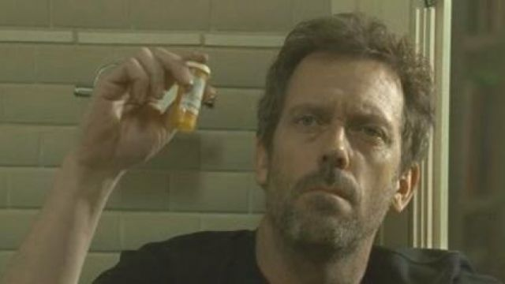

TRAMA
La serie trata sobre un doctor prodigio de la medicina llamado Gregory House,
el cual tiene un don único para resolver los casos más excepcionales que hay.
Dentro del Hospital Princeton-Plainsboro, House tiene su propio equipo conformado
por otros 3 medicos; Foreman, Chase y Cameron, los cuales siguen a su jefe
en la resolución de los casos más complicados.
En el transcurso de la trama veremos a este equipo lidiar con diferentes casos
y sus diferentes disputas internas como; las actitudes denigrantes y manipuladoras
de House y su adicción al Vicodin, sus diferencias de cómo abordar los casos y los
métodos poco éticos (pero eficientes) de su jefe para poder curar al paciente.
Para que House no se salga de control por culpa de sus actitudes, procedimientos
o adicción su jefa, Lisa Cuddy, se encarga de que no sobrepase ningún límite, y
su mejor amigo Wilson sirviendo como apoyo incondicional para sus momentos de
desequilibro, tristeza o cuestionamientos morales de si lo que hace está bien o mal.
Todo esto ocurre a lo largo de toda la serie, estas características influyen en el
desarrollo de la trama y en especial enfocándose y afectando el entorno del Doctor House,
llevando a sucesos como el cambio de su equipo, relaciones amorosas fallidas y el quiebre
emocional y físico de House provocando el agravamiento de su adicción y su posterior
recuperación, rehabilitación y la prisión.
Temporada 1
Se introduce al Dr. Gregory House y su equipo. La temporada se centra
en casos médicos complicados que el equipo debe resolver, con un enfoque
en las habilidades de diagnóstico únicas de House. Se exploran las relaciones
entre House y su equipo, así como su complicada relación con su única amiga,
la Dra. Lisa Cuddy, y su mejor amigo, el Dr. James Wilson. Se comienza a ver
la dependencia de House al Vicodin.

Temporada 2
Se profundiza en la lucha de House con su adicción al Vicodin y su relación
con sus colegas. Reaparece su antigua pareja complicando su vida
personal y profesional (por los conflictos internos que house tenía con ella).

Temporada 3
House se enfrenta a más dilemas éticos y médicos mientras continúa luchando
con su adicción. La relación entre él y su equipo se vuelve más tensa. Un detective
comienza a investiga la adicción de House al Vicodin, lo que lo lleva a enfrentarse a muchos
problemas. Se explora más a fondo la vida personal de los personajes.
Temporada 4
Después de que Foreman, Chase y Cameron dejan su equipo, House organiza una
competencia para seleccionar a nuevos miembros, aunque Foreman regresa más
tarde. Se introducen los nuevos miembros del equipo y nuevas dinámicas. Al final
de la temporada ocurrre un accidente que culmina en la muerte de la novia de Wilson,
dejandolo debastado y culpando a House por ese accidente, debido a esto ambos se veran
demasiado afectados, dañando su salud, su trabajo y su relación.
Temporada 5
House sigue lidiando con su constante adicción y su relación complicada con Wilson,
también se abordan temas como la depresión y el suicidio, siendo particularmente
impactante la muerte de su compañero Kutner, dejando debastado a House,
quien nuevamente se siente culpable por la muerte de un ser querido, lo que intensifica
su adiccion a un punto de quiebre.

Temporada 6
La temporada inicia con House internado en un hospital psiquiátrico luchando por superar su adicción.
Al salir de rehabilitacion y volver a trabajar, debe enfrentar su nueva realidad tratando de cambiar y mejorar
aceptando sus errores y su adiccion. Esta nueva faceta provoca nuevas relaciones con sus colegas
y pacientes. Este cambio provoca que Cuddy y House comienzan a explorar su atracción mutua.
Temporada 7
Se muestra como house maneja las relaciones personales a través de su relación romántica
con Cuddy, convirtiendose en el foco principal, afectando tanto su vida personal
como profesional. Sin embargo, la relación eventualmente se desintegra, lo que lleva a
House a un punto de quiebre y actuar de manera autodestructiva; estrellando su auto contra
la casa de Cuddy.

Temporada 8
La temporada final nos muestra a House en prision por los hechos de la temporada anterior y su
eventual liberacion. Al salir descubre que Wilson tiene cancer terminal, dandole poco tiempo de vida, pero
sin querer aceptar eso se esmera en poder curar a su amigo a toda costa, sin exito alguno.
House comete ciertos errores que terminan en el incumplimiento de su libertad condicional, pero
decidido en disfrutar el poco tiempo de vida de su amigo, finge su muerte para no ir a prisión y poder disfrutar
el poco tiempo que tiene con Wilson, yéndose juntos en un viaje sin destino, dejando atras cualquier otra cosa.